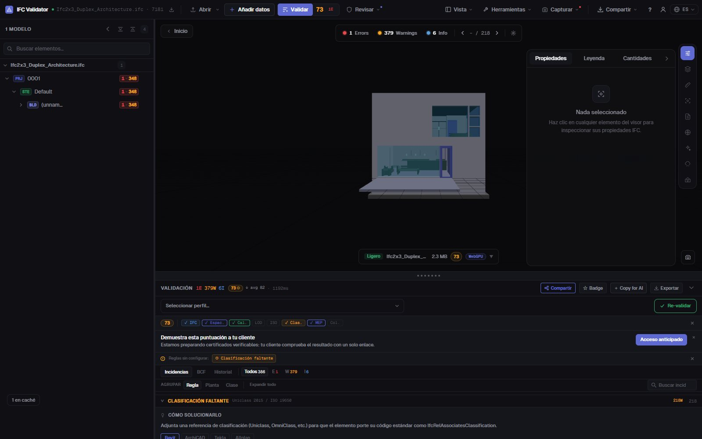
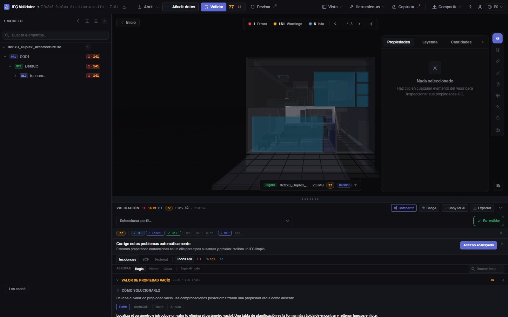

Comprobar la clasificación IFC
Uniclass, OmniClass, Psets
Encuentra cada elemento de un IFC sin referencia de clasificación (de cualquier sistema o solo de los que exige tu Plan de Ejecución BIM), junto con conjuntos de propiedades que faltan, valores vacíos y nombres que rompen tu convención. Cada hallazgo se lista, se cuenta y se muestra en 3D.
Comprobar la clasificación — gratis →Sin cuenta · Sin subir nada · Funciona en tu navegador · Gratis

Qué puedes hacer
Comprobaciones de clasificación y datos para una entrega
Lo que revisa un coordinador BIM antes de aceptar un modelo en el CDE.
Clasificación ausente
Cada elemento físico sin IfcClassificationReference, de cualquier sistema o solo de los que indiques (Uniclass 2015, OmniClass, CCS, NL-SfB…).
Clasificación por IDS
Carga un archivo IDS de buildingSMART para exigir un sistema y un código concretos por tipo de elemento; la faceta de clasificación de IDS está soportada al completo.
Validación de Psets
Conjuntos de propiedades obligatorios que faltan y propiedades con valor vacío, por clase de elemento.
Convención de nombres
Compara los nombres con los patrones de tu BEP, además de nombres vacíos y duplicados (renombrables en bloque).
Visible en 3D
Aísla en el modelo los elementos que fallan cualquier comprobación, con el resto en transparencia, y salta a cada uno.
Exportable
Envía los hallazgos como BCF al autor, o descarga un CSV, un informe JSON o un informe de entrega imprimible.
Capturas

Preguntas
Preguntas frecuentes
¿Cómo compruebo la clasificación de un modelo IFC?
Abre el IFC en IFC Viewer Online y valida con la regla de clasificación activa (los perfiles ISO 19650 y de coordinación la incluyen). Lista cada elemento sin referencia de clasificación y los muestra en 3D. Para exigir un sistema y un código por tipo de elemento, carga un archivo IDS.
¿Qué sistemas de clasificación admite?
Cualquiera guardado como IfcClassification / IfcClassificationReference en el archivo: Uniclass 2015, OmniClass, CCS, NL-SfB, CoClass, MasterFormat o el tuyo propio. Puedes aceptar cualquier sistema o solo los que indiques.
¿También valida conjuntos de propiedades?
Sí. Hay reglas para Psets obligatorios que faltan y valores vacíos, y un IDS puede exigir propiedades, tipos de dato y valores concretos.
¿Se sube el modelo?
No. La comprobación se ejecuta en tu navegador con WebAssembly; el IFC no sale de tu ordenador. Gratis para cualquier uso, sin cuenta.
¿Puedo compartir los resultados con el autor del modelo?
Sí: exporta las incidencias como BCF 2.1 para su herramienta, como CSV o JSON, o como informe de entrega imprimible.
Sabe qué está sin clasificar antes de que el modelo llegue al CDE.
Clasificación · Psets · Nombres · IDS · BCF
Comprobar la clasificación — gratis →